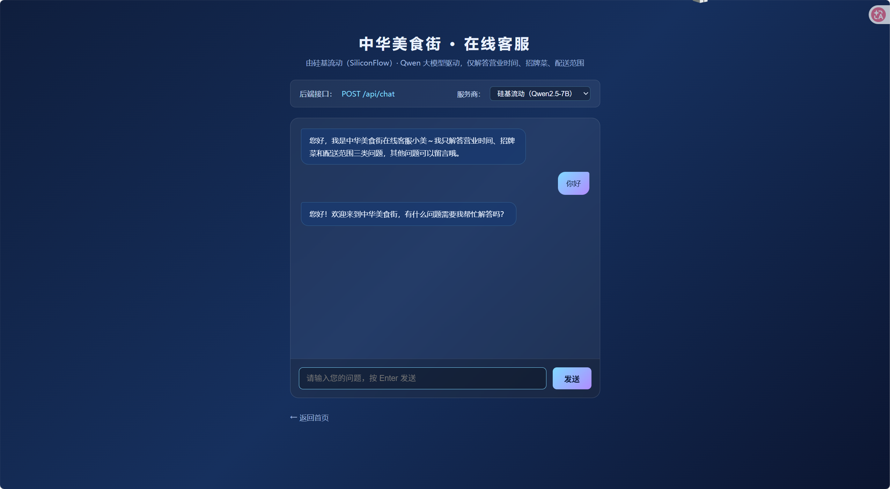
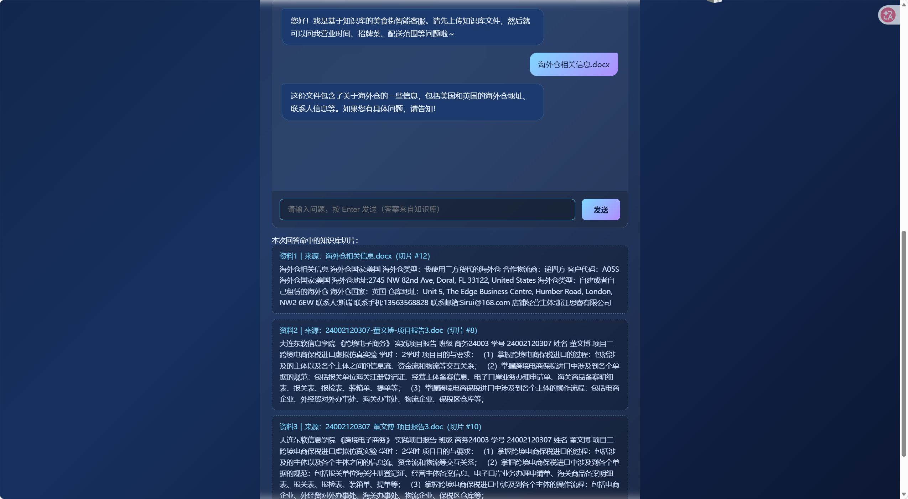
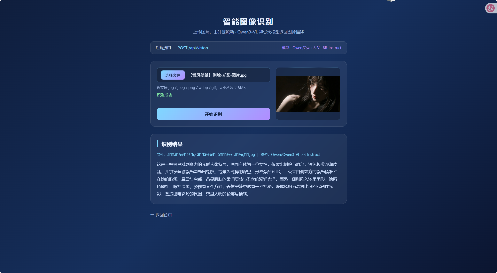
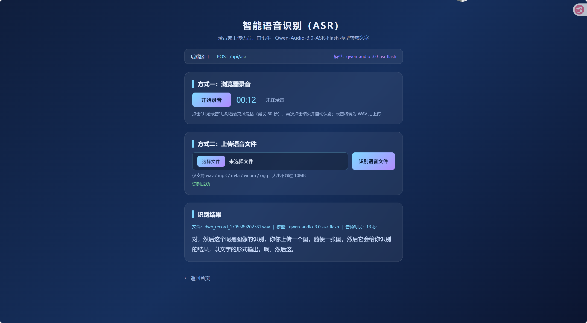

四个大模型能力实践模块均已完成联调与真机测试：对话客服、知识库问答（RAG）、图像理解、语音识别。
以下为各模块的实测截图，点击截图可放大查看。
测试要点：客服开场自我介绍（解答营业时间、招牌菜、配送范围三类问题），发送"你好"后模型按系统设定的人设正常回复，说明对话接口与提示词约束均生效。

测试要点：上传业务文档建立知识库后提问"海外仓相关信息"，模型回答基于文档内容；页面下方展示本次回答命中的知识碎片明细（来源文件、相似度得分 #12/#8/#10），验证检索增强链路完整。

测试要点：上传《信风影集》电影剧照后点击"开始识别"，模型返回对画面主体、光影、色彩与氛围的完整中文描述，验证多模态视觉理解接口联通正常。

测试要点：浏览器录音 12 秒自动停止并转 WAV 上传（也可上传 wav/mp3/m4a/webm/ogg 文件，≤10MB）；本条 13 秒语音成功转写为文字结果，验证录音、上传两条链路与转写接口均可用。
